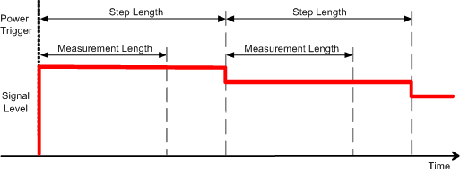
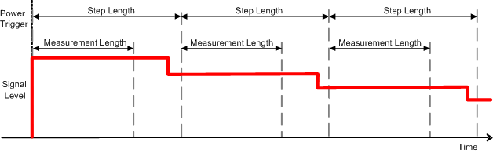
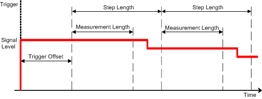

In its simplest configuration, the power measurement provides the average power in a measurement interval of configurable length ("Measurement Length"). The instrument behaves like a power meter.
The measurement interval can be repeated periodically over a sequence of power/frequency steps (list mode). A step sequence is called a "sweep".

The measurement interval is moved relative to the power steps, if the first step that the DUT generates is shortened. This feature can be suitable to avoid the switching transients due to the power steps.

Alternatively, it is possible to introduce a trigger offset to move the measurement interval relative to the steps.

A trigger offset is also suitable if the first power step is longer than the following steps.

The entire sweep can be repeated several times to perform statistical evaluations.